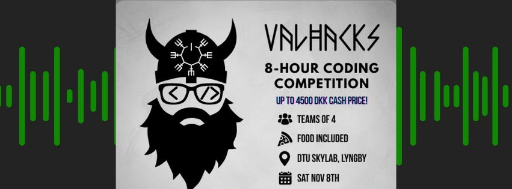

<!DOCTYPE html>
<html lang="en">
<head>
<meta charset="UTF-8">
<meta name="viewport" content="width=device-width, initial-scale=1.0">
<title>ValHacks — Spotify Recommender | Portfolio</title>

<script src="https://cdn.tailwindcss.com"></script>
<script>
  tailwind.config = {
    theme: {
      extend: {
        colors: {
          bg: 'var(--bg-color)',
          surface: 'var(--surface-color)',
          clay: 'var(--clay-color)',
          slate: 'var(--slate-color)',
          muted: 'var(--muted-color)',
          border: 'var(--border-color)',
        },
        fontFamily: {
          sans: ['Outfit', 'ui-sans-serif', 'system-ui', 'sans-serif'],
          serif: ['Playfair Display', 'ui-serif', 'Georgia', 'serif'],
        }
      }
    }
  }
</script>

<style>
  @import url('https://fonts.googleapis.com/css2?family=Outfit:wght@300;400;500;700&family=Playfair+Display:wght@400;700&display=swap');

  :root {
    --bg-color: #FDF8F5;
    --surface-color: #FFFFFF;
    --clay-color: #E8B4A0;
    --slate-color: #3A3A3A;
    --muted-color: #A09890;
    --border-color: #F0E8E4;
    --grid-color: rgba(232, 180, 160, 0.06);
  }

  body { background-color: var(--bg-color); color: var(--slate-color); font-family: 'Outfit', sans-serif; overflow-x:hidden; }
  h1,h2,h3,h4,h5,h6 { font-family: 'Playfair Display', serif; }
  .tag { font-size: 10px; font-weight:700; letter-spacing:0.25em; text-transform:uppercase; color: var(--clay-color); }
  .mountain-overlay { position:fixed; bottom:0; left:0; width:100%; height:100%; background:url("data:image/svg+xml,%3Csvg xmlns='http://www.w3.org/2000/svg' viewBox='0 0 1440 320'%3E%3Cpath fill='%23E8B4A0' fill-opacity='0.04' d='M0,160L120,186.7C240,213,480,267,720,261.3C960,256,1200,192,1320,160L1440,128L1440,320L1320,320C1200,320,960,320,720,320C480,320,240,320,120,320L0,320Z'%3E%3C/path%3E%3C/svg%3E") no-repeat bottom; background-size:cover; z-index:-1; pointer-events:none; opacity:1;}
  .progress-bar { position:fixed; top:0; left:0; height:4px; background:var(--clay-color); width:0%; z-index:50; }
  .glass-panel { background: var(--surface-color); border: 1px solid rgba(0,0,0,0.05); border-radius:32px; box-shadow:0 4px 30px rgba(0,0,0,0.02); }
</style>

<script type="importmap">
  { "imports": { "react": "https://esm.sh/react@18.2.0", "react-dom/client": "https://esm.sh/react-dom@18.2.0/client", "framer-motion": "https://esm.sh/framer-motion@11.0.3?external=react,react-dom" } }
</script>
<script src="https://unpkg.com/@babel/standalone/babel.min.js"></script>
</head>

<body>
<div id="root"></div>

<script type="text/babel" data-type="module">
import React from 'react';
import { createRoot } from 'react-dom/client';
import { motion, useScroll, useTransform, useSpring } from 'framer-motion';

const ProgressBar = () => {
  React.useEffect(() => {
    const handleScroll = () => {
      const scrollTop = document.documentElement.scrollTop;
      const scrollHeight = document.documentElement.scrollHeight - window.innerHeight;
      document.getElementById('progressBar').style.width = (scrollTop / scrollHeight) * 100 + '%';
    };
    window.addEventListener('scroll', handleScroll);
    return () => window.removeEventListener('scroll', handleScroll);
  }, []);
  return <div id="progressBar" className="progress-bar"></div>;
};

const Parallax = () => {
  const { scrollYProgress } = useScroll();
  const smooth = useSpring(scrollYProgress, { damping: 20, stiffness: 100 });
  const mountainY = useTransform(smooth, [0,1], ['0%','20%']);
  return <motion.div style={{y: mountainY}} className="mountain-overlay"></motion.div>;
};

const Navbar = () => (
  <nav className="p-4 md:p-8 sticky top-0 bg-surface/80 backdrop-blur-md z-50">
    <a href="../index.html" className="tag hover:text-clay transition flex items-center">
      ← Portfolio
    </a>
  </nav>
);

const Section = ({children}) => (
  <motion.section initial={{opacity:0,y:30}} whileInView={{opacity:1,y:0}} viewport={{once:true}} className="mb-24 md:mb-32">
    {children}
  </motion.section>
);

const Card = ({title, body}) => (
  <div className="bg-surface p-6 md:p-8 rounded-2xl shadow-xl border border-border">
    <h4 className="text-xl font-bold mb-3 text-slate">{title}</h4>
    <p className="text-muted leading-relaxed text-sm md:text-base">{body}</p>
  </div>
);

const App = () => (
  <>
    <ProgressBar />
    <Parallax />
    <Navbar />
    <main className="max-w-5xl mx-auto px-6 py-20">
      <header className="mb-24 md:mb-32">
        <span className="tag mb-4 block">Hackathon // Music Recommendation</span>
        <h1 className="text-4xl sm:text-5xl md:text-7xl font-bold mb-12 tracking-tight leading-tight">
          ValHacks <br />
          <span className="text-clay">Spotify Recommender</span>
        </h1>
        <p className="text-xl text-muted font-light leading-relaxed max-w-2xl mb-12">
          Multi-day hackathon organized by IDA, Accenture and BEST Copenhagen. Our team built a content-based music recommender on a real Spotify dataset, iterating together through the whole pipeline — from data cleaning to a working, evaluated model.
        </p>
        <div className="bg-surface p-3 rounded-2xl shadow-xl border border-border overflow-hidden max-w-3xl">
          
          <p className="text-muted text-xs px-2 pt-3">ValHacks · IDA, Accenture & BEST Copenhagen</p>
        </div>
      </header>

      <Section>
        <h3 className="tag mb-8 font-bold">I. The Event</h3>
        <p className="text-muted text-lg leading-relaxed mb-6">
          ValHacks is a hackathon organized by IDA, Accenture and BEST Copenhagen. Over several days, multidisciplinary student teams were challenged on a real engineering problem and worked on it with the support of company mentors, working through ideation, implementation and pitching.
        </p>
        <p className="text-muted leading-relaxed">
          We split the work across the team — data understanding, preprocessing, modelling and evaluation — and kept everything in a shared repository so we could integrate our parts without stepping on each other.
        </p>
      </Section>

      <Section>
        <h3 className="tag mb-8 font-bold">II. The Challenge</h3>
        <p className="text-muted text-lg leading-relaxed mb-6">
          Build a music recommendation system on a Spotify dataset of over 114,000 tracks. Each track came with metadata and audio features: danceability, energy, tempo, valence, loudness, acousticness and more.
        </p>
        <p className="text-muted leading-relaxed mb-8">
          The test set was built from real playlists. For each playlist, a set of tracks is hidden and the system is given only the remaining tracks plus a hint about which artists were removed. The goal is to recommend the hidden tracks. Submissions were ranked with the NDCG@5 metric and compared against a baseline recommender provided by the organizers.
        </p>
        <div className="grid md:grid-cols-3 gap-6">
          <Card title="114k+ tracks" body="Real Spotify dataset with metadata and audio features for every track." />
          <Card title="Playlist recovery" body="Hidden tracks had to be recovered from partial playlist input plus an artist hint." />
          <Card title="NDCG@5 scoring" body="Official ranking metric, measured against the baseline recommender provided by the organizers." />
        </div>
      </Section>

      <Section>
        <h3 className="tag mb-8 font-bold">III. Preprocessing</h3>
        <p className="text-muted text-lg leading-relaxed mb-6">
          The first step was getting the data into a clean, usable state. We removed rows with missing values and converted the explicit flag into a numeric feature.
        </p>
        <p className="text-muted leading-relaxed mb-8">
          For the feature set we deliberately kept the perceptually relevant audio descriptors — danceability, energy, loudness, speechiness, acousticness, instrumentalness, liveness, tempo and valence — and dropped features like popularity and key, which carry little signal about how a track actually sounds. Genre was encoded as a one-hot vector.
        </p>
        <div className="flex flex-wrap gap-3">
          {['Pandas', 'NumPy', 'Scikit-learn', 'OneHot Encoding', 'Feature Selection', 'Joblib'].map(s => (
            <span key={s} className="tag px-4 py-2 rounded-full border border-border bg-surface">{s}</span>
          ))}
        </div>
      </Section>

      <Section>
        <h3 className="tag mb-8 font-bold">IV. The Approach</h3>
        <p className="text-muted text-lg leading-relaxed mb-6">
          We built a content-based kNN recommender. Instead of using user listening histories, it compares tracks purely by their audio features, which keeps the model simple and fast to train and evaluate.
        </p>
        <div className="grid md:grid-cols-2 gap-8 items-center mb-8">
          <div className="space-y-6">
            <div className="flex gap-4">
              <div className="shrink-0 w-10 h-10 bg-clay/10 rounded-full flex items-center justify-center text-clay font-bold">1</div>
              <div>
                <h4 className="text-lg font-bold mb-2 text-slate">Feature Weighting</h4>
                <p className="text-muted leading-relaxed text-sm">The most relevant features — danceability, tempo and energy — were weighted more heavily before computing similarity, so the model focuses on what makes tracks feel similar to a listener.</p>
              </div>
            </div>
            <div className="flex gap-4">
              <div className="shrink-0 w-10 h-10 bg-clay/10 rounded-full flex items-center justify-center text-clay font-bold">2</div>
              <div>
                <h4 className="text-lg font-bold mb-2 text-slate">Multi-Track Aggregation</h4>
                <p className="text-muted leading-relaxed text-sm">The feature vectors of all input tracks are averaged into a single mean profile, which is then used to query the kNN model for the closest tracks.</p>
              </div>
            </div>
            <div className="flex gap-4">
              <div className="shrink-0 w-10 h-10 bg-clay/10 rounded-full flex items-center justify-center text-clay font-bold">3</div>
              <div>
                <h4 className="text-lg font-bold mb-2 text-slate">Dedup & Artist Filter</h4>
                <p className="text-muted leading-relaxed text-sm">Candidates are deduplicated by track and artist — the same song can appear under multiple genres — and then filtered using the artist hint to keep recommendations relevant.</p>
              </div>
            </div>
          </div>
          <div className="bg-surface p-6 rounded-2xl border border-border shadow-sm">
            <p className="text-[10px] font-bold uppercase tracking-widest text-muted mb-4">Model</p>
            <p className="font-serif text-xl leading-relaxed text-slate">kNN · cosine similarity</p>
            <p className="text-muted text-sm leading-relaxed mt-4">NearestNeighbors from scikit-learn, fit on L2-normalized, genre-augmented audio features. The fitted model was saved with joblib so it could be reloaded for evaluation without retraining.</p>
          </div>
        </div>
      </Section>

      <Section>
        <h3 className="tag mb-8 font-bold">V. Iteration</h3>
        <p className="text-muted leading-relaxed mb-6">
          With the official evaluation requiring a structured submission, we also built our own quick local loop: for each playlist, shuffle the tracks, hide five of them, run the recommender on the rest and count how many hidden tracks came back in the recommendations. Running this repeatedly across many playlists let us test feature and weighting changes in minutes, without waiting for the official pipeline.
        </p>
        <p className="text-muted leading-relaxed mb-6">
          This loop is where the feature weighting came from — dropping popularity and key, and up-weighting danceability, tempo and energy, visibly improved how often hidden tracks were recovered across different playlists.
        </p>
        <div className="flex flex-wrap gap-3">
          {['Python', 'Scikit-learn', 'kNN', 'Cosine Similarity', 'Git', 'Iterative Tuning'].map(s => (
            <span key={s} className="tag px-4 py-2 rounded-full border border-border bg-surface">{s}</span>
          ))}
        </div>
      </Section>

      <Section>
        <h3 className="tag mb-8 font-bold">VI. Evaluation</h3>
        <p className="text-muted text-lg leading-relaxed mb-6">
          Our final model was submitted to the official evaluation and compared against the baseline recommender using NDCG@5 across the hidden-track playlists.
        </p>
        <div className="grid md:grid-cols-3 gap-4 md:gap-8 mb-4">
          {[
            { v: 'NDCG@5', l: 'official ranking metric for the challenge' },
            { v: 'vs Baseline', l: 'our kNN model evaluated against the organizer-provided baseline' },
            { v: 'Content-based', l: 'no user history — similarity driven purely by audio features' }
          ].map((s, i) => (
            <motion.div key={i} className="bg-surface rounded-2xl border border-border shadow-sm p-4 md:p-6">
              <p className="text-clay font-serif text-lg md:text-2xl font-bold mb-1">{s.v}</p>
              <p className="text-muted text-[11px] md:text-xs leading-snug">{s.l}</p>
            </motion.div>
          ))}
        </div>
        <p className="text-muted leading-relaxed">
          The main takeaway from the evaluation phase was how much of the score came from decisions made before any modelling: which features to include, how to weight them and how to handle duplicates. The model itself was deliberately simple — the wins came from the feature engineering and the iteration loop.
        </p>
      </Section>

      <Section>
        <div className="p-6 md:p-12 glass-panel relative overflow-hidden">
          <div className="absolute left-0 top-0 bottom-0 w-1 bg-clay/30"></div>
          <h4 className="font-bold text-clay uppercase text-[10px] mb-4 tracking-[0.3em]">Key Insight</h4>
          <p className="text-xl font-medium text-slate-800 leading-relaxed">
            In a tight hackathon sprint, the score is decided before the modelling. Feature selection, weighting and a fast local evaluation loop let our team iterate quickly and ship a working, evaluated recommender without overcomplicating the model itself.
          </p>
        </div>
      </Section>

    </main>
  </>
);

createRoot(document.getElementById('root')).render(<App />);
</script>

</body>
</html>
